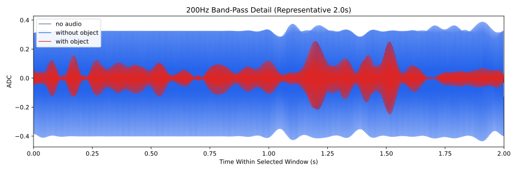
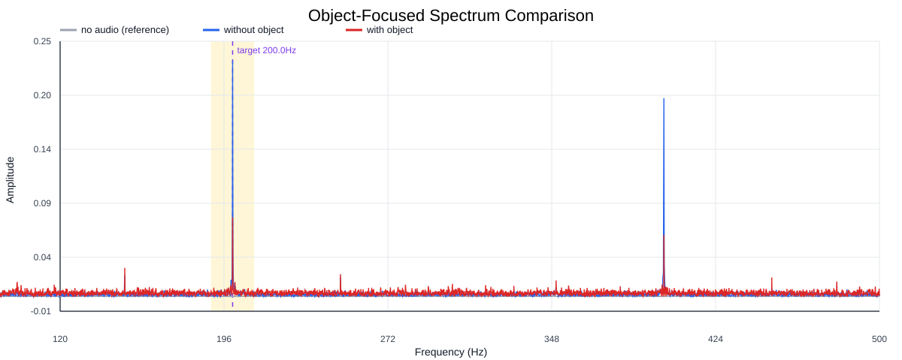
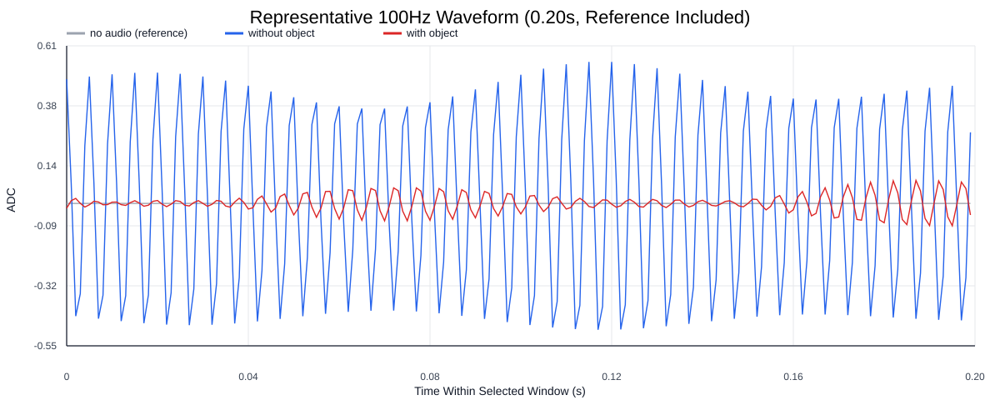
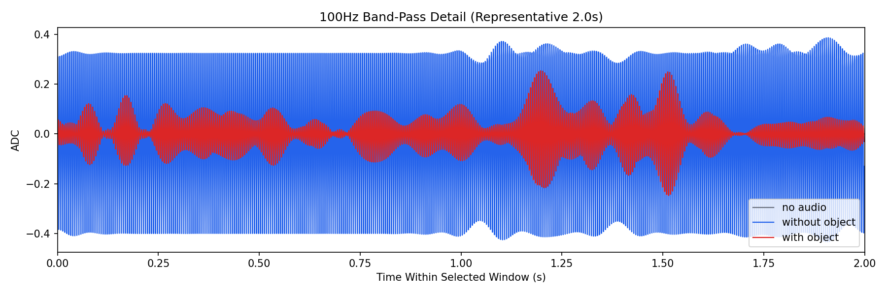
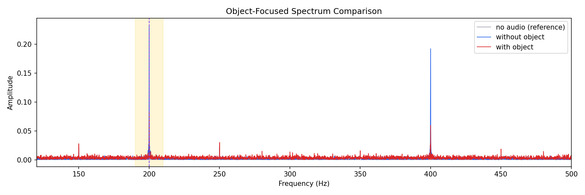
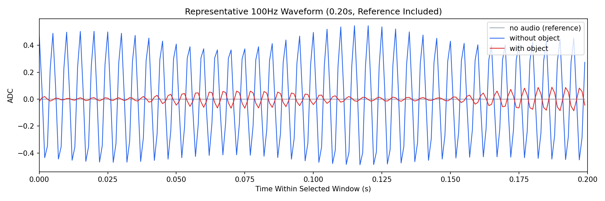

Background: F:\项目类文件夹\异物检测4.10\Data_Dual\frequency_sweep\0200Hz\repeat_01\raw\no_audio.csv
Without object: F:\项目类文件夹\异物检测4.10\Data_Dual\frequency_sweep\0200Hz\repeat_01\raw\without_object.csv
With object: F:\项目类文件夹\异物检测4.10\Data_Dual\frequency_sweep\0200Hz\repeat_01\raw\with_object.csv
| Metric | 无音频 | 100Hz无异物 | 100Hz有异物 | 无异物/无音频 | 有异物/无异物 | 有异物/无音频 |
|---|---|---|---|---|---|---|
| centered_rms | 0.024507 | 0.326238 | 0.226429 | 13.3120 | 0.6941 | 9.2393 |
| raw_target_amp | 0.000327 | 0.228923 | 0.077070 | 699.7474 | 0.3367 | 235.5801 |
| filtered_rms | 0.005292 | 0.206086 | 0.086690 | 38.9409 | 0.4207 | 16.3806 |
| filtered_target_amp | 0.000327 | 0.228923 | 0.077070 | 699.7474 | 0.3367 | 235.5801 |
| filtered_energy_ratio | 0.046634 | 0.399049 | 0.146581 | 8.5571 | 0.3673 | 3.1432 |
| window_filtered_target_amp_mean | 0.001274 | 0.217480 | 0.099575 | 170.7393 | 0.4579 | 78.1741 |
| window_filtered_target_amp_std | 0.003576 | 0.186104 | 0.040407 | 52.0441 | 0.2171 | 11.2998 |





